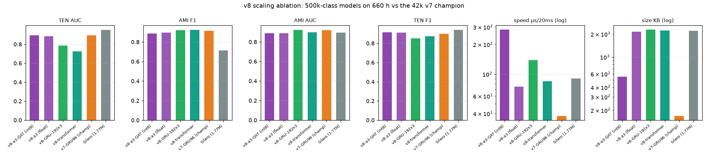

Shared protocol (human-labelled audio — TEN VAD public set and 8 AMI SDM meetings — AMI-dev-calibrated operating points, AUC on raw probabilities):
| v8-GRU-192×3 | v8-transformer d128×4 | v8-a3 MLP float | v8-a3 int8 QAT | v7-GRU96 (champion) | Silero (1.77M) | WebRTC | |
|---|---|---|---|---|---|---|---|
| params | 582k | 570k | 549k | 549k | 42k | 1,774k | ~6k |
| KB | 2,285 | 2,229 | 2,157 | 554 | 169 | 2,200 | ~50 |
| TEN F1 (best thr*) | 0.8503 | 0.8726 | 0.9122 | 0.9133 | 0.8992 | 0.9398 | n/a |
| TEN AUC | 0.7843 | 0.7255 | 0.8844 | 0.8949 | 0.8934 | 0.9514 | n/a |
| AMI F1 (calibrated) | 0.9191 | 0.9234 | 0.8949 | 0.8852 | 0.9153 | 0.7136 | 0.8419 |
| AMI AUC | 0.9227 | 0.8969 | 0.8880 | 0.8889 | 0.9182 | 0.8938 | 0.7602 |
| µs / 20 ms chunk | 138.8 | 84.7 | 75.0 | 281.9* | 37.9 | 90.2 | 1.8 |
teensy-vad-v8 results (verbatim). * tuned on that set — upper bound, like-for-like with FlashVAD's published convention. *the v8-a3 int8 figure is an unoptimized NumPy int8 runtime; its artifact is 4× smaller than the float version. No v8 model dominates the 42k v7 champion: the deep nets win AMI rooms, the a3-int8 matches champion TEN AUC at family-best TEN F1, and v7 stays 2–7× faster than every v8 model.

This figure is v8-specific: the four ~500k models against the v7-GRU96 champion and public baselines on the shared real-world protocol.